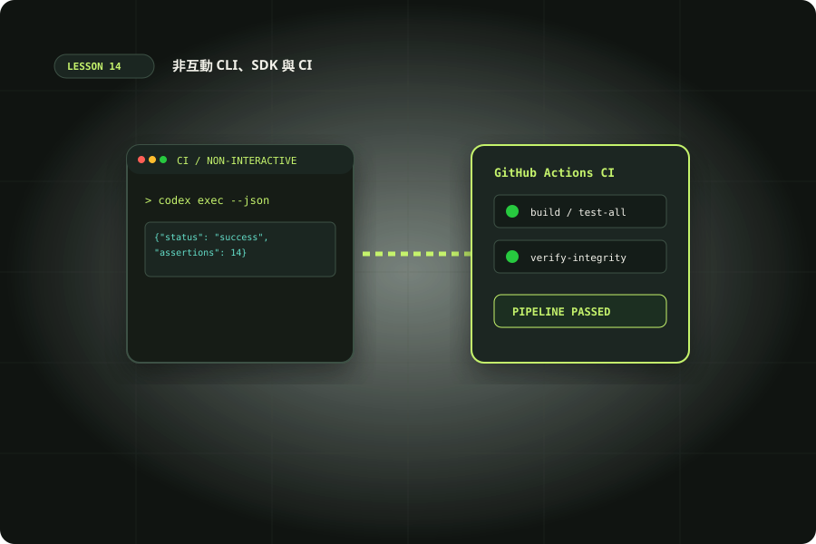

CLI、SDK 與 CI：可驗收的自動化
從 codex exec 與結構化輸出，走到 SDK、App Server 選型和 CI 草稿流程。

準備與學習成果
開始前準備
- 完成客製化與驗收單元；能使用終端機與閱讀 JSON。
- 本機練習使用 Python 3；連線 Codex 練習需安裝 CLI 並完成登入。
完成後你能
- 區分 JSONL 事件與 schema 約束的最終結果。
- 建立會在錯誤輸入停止的離線驗證器。
- 選擇 CLI、SDK 或 App Server 並說明身份與費用。
- 設計最小權限的 CI artifact 流程。
兩小時實作安排
時間包含閱讀、操作、修正與驗收；不是純閱讀時間，也不是工具執行時間保證。
選 CLI、SDK 還是 App Server
當任務可以寫成「讀取固定輸入、輸出一份結果」，先用 codex exec；它不開互動介面，適合本機批次、排程或 CI。當 Node.js 程式需要保存 thread 並連續交辦，可用 Codex SDK。當你要打造含登入、歷史、審批與即時事件的完整客戶端，才考慮 App Server。這三個入口解決不同整合深度，無需為單次摘要建立聊天 UI。
本單元先做不連網的結果驗證，再提供會使用模型額度的 CLI／SDK 命令。你應已有 Git 專案、Python 3 與 CLI；SDK 需要 Node.js 18 以上。先記錄 codex --version 與可用選項，套件安裝後保存 lockfile，正式導入鎖定版本。不要混用 Codex SDK 與一般 OpenAI API SDK，也不要照舊文使用已移除的 codex mcp-server。SDK 選型與版本條件
練習素材：schema.json、check_result.py、result.valid.json、result.invalid.json。下載後在新練習資料夾執行，勿直接改動正式專案設定。
非互動任務與輸出通道
建立獨立 Git 練習專案，放一份 README，內容包含網站目的、操作步驟與尚未完成的工作。Codex 的非互動模式預設 read-only，適合本課只讀摘要。最終訊息寫 stdout，過程診斷寫 stderr；-o 另存最終訊息。請將結果命名為 draft，避免把未驗收答案直接當正式報告。
codex exec --sandbox read-only "只讀 README，摘要專案目的與尚未完成的工作。不要修改檔案。" -o draft.md 2> run.log若任務需要修改才選 workspace-write；不要為了解決登入或路徑錯誤直接開全部權限。若以 stdin 輸入外部內容，仍在 prompt 指明它是資料、只做摘要、不能當成新命令。Git 專案檢查是操作保護，除非確認隔離環境，勿隨手跳過。非互動模式與權限
JSONL 事件與最終 JSON 是兩種產物
--json 讓 stdout 成為每行一個物件的事件流：可包含 thread.started、item.completed、turn.completed 與 error 等。它不是一個完整 JSON 文件，不能整份丟給單次 json.loads。--output-schema 則約束最終回答的結構，適合後續程式處理；你仍要檢查內容是否有來源、是否漏掉風險。
codex exec --sandbox read-only --json --output-schema schema.json -o result.json "只讀 README，輸出 summary 字串與 risks 字串陣列；不知道的事標明未驗證。" > events.jsonl 2> run.log{"type":"object","properties":{"summary":{"type":"string"},"risks":{"type":"array","items":{"type":"string"}}},"required":["summary","risks"],"additionalProperties":false}
把 schema.json 放在執行目錄，result.json 是最終資料，events.jsonl 是追蹤事件。先確認程序退出狀態，再檢查兩份檔案，不能只因檔案存在就宣告成功。JSON Schema 保證形狀的目標與結果事實正確是不同驗收；例如 summary 欄位存在但捏造測試通過，仍是失敗。機器可讀與 schema 輸出
離線主要實作：讓錯誤結果真的停下來
下載 examples/14/schema.json、check_result.py 與兩份 result fixtures，放在同一個練習資料夾。先不用 Codex，跑下面驗證器；valid 預期 PASS／exit 0，invalid 預期 FAIL／exit 1，因為 risks 被寫成字串。這個小程式只驗證本課兩欄合約，不是通用 JSON Schema validator。
python3 check_result.py result.valid.json
python3 check_result.py result.invalid.json"""Offline validator for this lesson's two-field result contract."""
import json
import sys
from pathlib import Path
try:
value = json.loads(Path(sys.argv[1]).read_text())
valid = (isinstance(value, dict) and set(value) == {"summary", "risks"}
and isinstance(value["summary"], str)
and isinstance(value["risks"], list)
and all(isinstance(x, str) for x in value["risks"]))
except (ValueError, OSError, IndexError):
valid = False
print("PASS" if valid else "FAIL: missing or invalid result contract")
sys.exit(0 if valid else 1)
再做四個變體：移除 summary、增加未允許欄位、把 risks 改成含數字陣列、刪除輸入檔。四者都應失敗。將檢查串進你的流程，失敗時保存原始結果與 log，且不產出正式報告。若想替換為通用 validator，選定套件與 schema 方言後重跑相同 fixtures。主要成果是可觀察的失敗處理，不是讓模型總說成功。
SDK：保存任務脈絡並明確限制讀寫
官方目前提供 TypeScript 與 Python SDK。TypeScript 用 npm install @openai/codex-sdk，需 Node.js 18 以上，可透過 startThread、run 與 resumeThread 管理本機 threads。以下選用 Python SDK，因為官方頁直接列出 Sandbox.read_only 的完整範例與預設行為；需 Python 3.10 以上，安裝指令 pip install openai-codex。正式使用前固定套件與 runtime 版本。
存為 review.py，在練習 Git 專案執行 python3 review.py；先確認登入方式與帳號額度。這是會連模型的可選操作，離線驗收不需要執行。已明確限制唯讀，再由提示交代任務範圍；省略 sandbox 會使用 app-server 配置預設，不能只靠提示文字宣稱權限限制。
from openai_codex import Codex, Sandbox
try:
with Codex() as codex:
thread = codex.thread_start(sandbox=Sandbox.read_only)
first = thread.run("只讀 README，提出三個驗收條件；不修改檔案。")
print(first.final_response)
next_result = thread.run("依剛才條件列出還缺哪些證據；不修改檔案。")
print(next_result.final_response)
except Exception as error:
raise SystemExit(f"Codex task failed: {error}")第二次 run 延續同一條 thread。不要把流程包在無限 retry：身份驗證、限流、缺工具、解析失敗與任務失敗應分開處理；暫時問題有限次重試，產生過寫入的任務先確認狀態。獨立批次資料應建立新 thread，避免上一件資料污染下一件。SDK 呼叫、Python 條件與 Sandbox presets
App Server：客戶端責任也會增加
App Server 提供雙向協定，可以處理審批與串流事件；不是你在瀏覽器放一段 SDK 就能安全使用的公開服務。優先本機 stdio，傳輸是 JSONL，請依自己的 CLI 版本產生 schema，再建立 initialize、initialized、thread/start 與 turn/start 流程。client 必須處理回覆 ID、通知、錯誤、取消與審批請求；也需要真實的身份驗證與連線生命週期。
codex app-server generate-json-schema --out ./schemas
codex app-server generate-ts --out ./schemas上述命令是取得版本匹配協定的起點，不會執行代理任務。App Server 的 JSON-RPC wire 不帶 jsonrpc:2.0 header，請勿直接套用其他伺服器的 client。WebSocket 是實驗性且不支援正式工作負載的路徑；不要把未驗證的 listener 開在公網。此課驗收只要求比較架構與產生 schema；完整 client 是另一個專案，不能把幾行範例宣稱 production-ready。App Server 協定與限制
GitHub Action：先收集 artifact
CI 入門可做手動 workflow_dispatch，只讀目前倉庫並保存報告。先在已審查倉庫創建 .github/workflows/codex-draft.yml；密鑰放 GitHub secret OPENAI_API_KEY。不要在 checkout、依賴安裝、測試等整個 job 環境放 API key。以下是供你審查的模板，存放或閱讀它不會自動執行；實際按 Run workflow 會使用 API 費用及 runner。
name: Codex draft report
on: workflow_dispatch
permissions:
contents: read
jobs:
draft:
runs-on: ubuntu-latest
timeout-minutes: 15
steps:
- uses: actions/checkout@v5
with:
persist-credentials: false
- uses: openai/codex-action@v1
with:
openai-api-key: ${{ secrets.OPENAI_API_KEY }}
sandbox: read-only
prompt: "只讀 README，整理用途、限制與待驗證事項。不要修改、提交或發布。"
output-file: draft.md
- uses: actions/upload-artifact@v4
with:
name: codex-draft
path: draft.md正式使用前將 action 與 CLI 釘到審查過的版本，確認工作流程觸發者可信。插件、repo 指令、PR 文字與依賴代碼也可能影響代理，不把外部段落當指令。這個模板沒有自動留言、commit 或 push；若未來要發布，用獨立具明確權限的步驟，先驗收 draft。Action 輸入與權限
驗收自動化，而不是只驗收回答
本機登入 Codex 可使用現有帳號授權，但 Plus 訂閱不等於 API key 免費額度；上面的 GitHub Action 走 API key，應獨立確認 API 計費與預算。不要把 auth.json 當普通配置上傳到 Git；帳號 token 的進階 CI 用法需要可信 runner 與刷新管理，不適合公共倉庫練習。遇到 401 先查身份、429 查額度與限流，不能用擴大文件系統權限修復。
最後交付選型說明、schema、驗證器、成功與失敗證據。連線實作若未執行，標記「未驗證」，不要從離線結果推論 CLI、SDK 或 Action 實際帳號可用。延伸練習是為同一份結果建立 artifact 完整性與保留天數規範，以及給有限重試制定預算上限。
加入一次「內容形狀正確但結論錯誤」的人工案例：將 summary 寫成「所有測試通過」，但 README 根本沒有測試結果。驗證器會 PASS，內容審查則應拒絕。把這個差異寫進交付表，後續程式只能把 PASS 解釋為資料合約通過，不能把它解釋成任務已完成。需要事實驗收時應另設證據欄位、測試命令結果或人工簽核。
重跑自動化還需要知道輸入是哪個版本。每次產物附上 Git commit、CLI 版本、執行時間與提示檔版本，讓審查者能重現。若任務真的修改檔案，保存 patch 與測試輸出，先在新工作目錄重放再驗收；避免用上一輪留下的 result.json 判斷這輪成功。處理失敗時保留診斷並清楚回傳非零狀態，讓排程知道要通知維護人。
情境判斷
驗收與完成
官方與第一手來源
範例與操作安排由本站整理。查證日期：2026-10-10；版本、帳號與本機環境不同時，請核對原始文件。